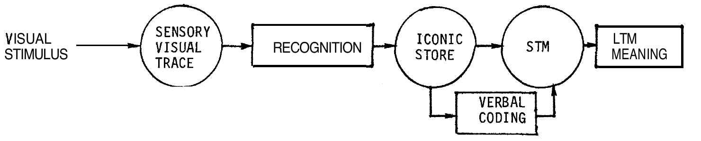

Deux approches particulières se trouvent à mi-chemin entre les démarches d'inspiration physiologique et les démarches psychologiques. Nous les citerons pour mémoire.
La subception est un processus perceptif, hypothétique, infraconscient, indiqué par une réponse
psychogalvanique à un stimulus qui n'est pas perçu
(PIERON,
1979 Piéron, H.: Vocabulaire de la psychologie, Paris, PUF, (1re éd. : )).
Plus généralement, on peut dire que la subception est la prise d'information d'une situation qui n'arrive pas à la conscience du sujet mais qui est susceptible de modifier son comportement.
En règle générale, on prouve l'existence du phénomène de subception par le fait qu'une présentation très rapide d'un stimulus qui n'est pas perçu (consciemment) est corrélée avec une réponse de l'individuPour une discussion théorique, voir ERDELYI (1974) Erdelyi, M. H.: A new look at the New Look: perceptual defense and vigilance, Psychol. Rev., vol. 81, pp. 1-25, . On peut citer, par exemple, les réponses électrodermales associées à certains mots « tabous » (cf. NOIZET et BROUCHON, 1967 Noizet, G., Brouchon, M.: Sources de variation de la réponse électrodermale lors d'une identification perceptive, Psychol. Franç., vol. 12, pp. 101-113, ), ou la résolution d'un problème visuel lorsque la solution a été présentée rapidement, avant l'expérience (cf. KOLERS, 1957 Kolers, P. A.: Subliminal stimulation in problem-solving, Amer. J. Psychol., vol. 70, pp. 437-441, ).
Ces exemples font penser que l'organisme est capable de prendre beaucoup plus d'information que celle dont nous avons conscience, aussi que cette information est conservée, au moins à court terme. Mais ils font aussi penser qu'il s'agit déjà d'une information construite, ayant une signification pour le sujet, et non pas une simple copie fidèle du réel.
Les arguments présentés plus haut, contre la fidélité d'une hypothétique mémoire des paramètres physiques, s'appliquent ici aussi sans restriction.
Le caractère apparemment linéaire du traitement de l'information entre les récepteurs sensoriels et les centres nerveux a fourni les bases premières à toute une série de modèles s'inspirant, sur le plan conceptuel, de la cybernétique.
Dans ces modèles appelés « multi-box » ou à « registres », une information instantanée copiée par le système sensoriel suit linéairement une série de traitements. Ces traitements consistent parfois en un enrichissement de l'information à partir des traces déposées antérieurement dans des mémoires à long terme, parfois simplement en un changement de code : par exemple, le passage d'un code « visuel » à un code « auditif ». Un tel exemple est représenté dans la figure suivante :

En partant de ces modèles les recherches essaient de cerner les caractéristiques fonctionnelles de l'acquisition et du traitement de l'information : vitesses, unités, remanences…
Cette optique demande une grande finesse expérimentale, pour quantifier l'information fournie, pour essayer d'arrêter le processus hypothétique de traitement à un endroit donné, pour mesurer les réponses. On utilise alors des techniques d'inspiration psychophysiologique (mesure de seuil, délais de réponse…), voire des techniques neurophysiologiques (amnésie après électrochoc).
Par ailleurs, les recherches font appel à des concepts issus de la psycholinguistique ou de la théorie de l'information.
En dehors d'une analyse fine de ces travaux, la remarque critique la plus importante à adresser à ces modèles concerne leur possibilité de généralisation.
En essayant d'approfondir l'analyse détaillée d'un processus postulé au départ, le chercheur risque de dédaigner des situations de la vie courante au point de ne travailler que sur un artefact n'existant que dans le laboratoire d'expérimentation.
SPERLING (1970) Sperling, G.: Short-term memory, long-term memory and scanning in the processing of visual information, in Young, F. A., Lindsley, D. B. (Eds), Early experience and visual information processing in perceptual and reading disorders, Washington, National Academy of Sciences, , par exemple, affine son modèle au point de montrer que lors de la perception d'un groupe de lettres ne constituant pas un mot, le « système visuel » traite ensemble des groupes de 3 lettres en 30 microsecondes. Mais nous voyons mal ce que ce fait permettrait de dire sur les processus perceptifs en général, ou sur la lecture d'un journal par exemple.
Pour que la moindre généralisation soit possible à partir des processus impliqués dans ce type de recherches, il serait nécessaire de montrer leur caractère additif. Or, pour ne rester que dans l'exemple cité, un grand nombre de résultats montrent que les données de SPERLING ne sont pas applicables à la lecture de suites significatives de lettres (i.e. formant des mots).